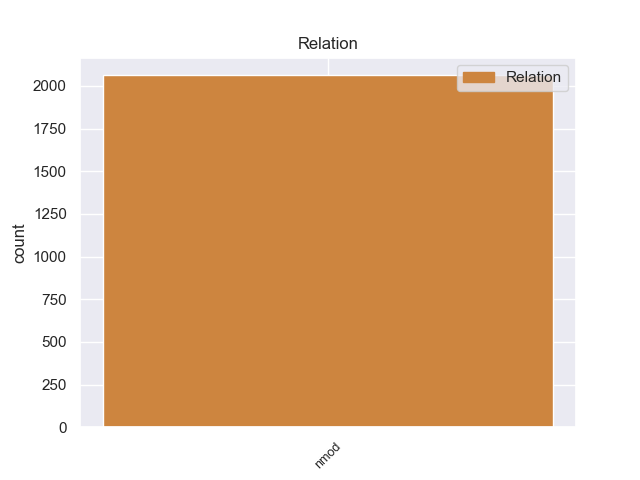
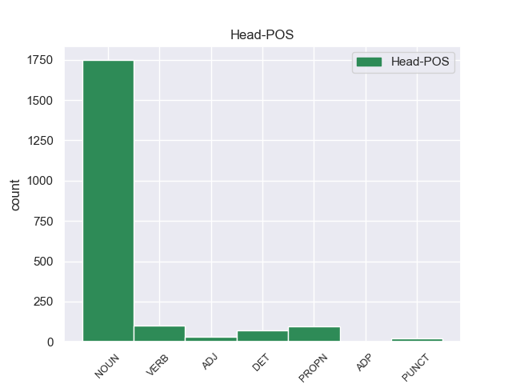
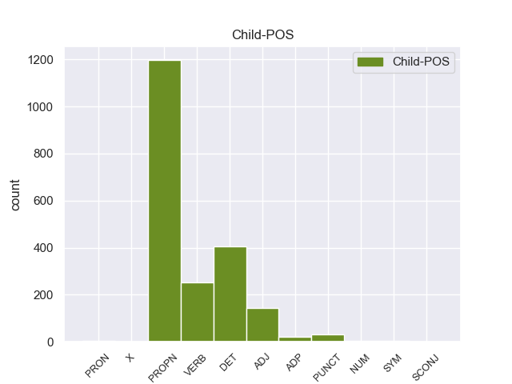

Distribution of features within this leaf



Agreement Rules sorted by frequency.
- When the dependent token is the nominal modifier(nmod) of the head token, and the dependent token is PROPN.
1 Esta _ _ _ _ 0 _ _ _
2 teoría _ _ _ _ 0 _ _ _
3 se _ _ _ _ 0 _ _ _
4 avenía _ _ _ _ 0 _ _ _
5 bien _ _ _ _ 0 _ _ _
6 con _ _ _ _ 0 _ _ _
7 la _ _ _ _ 0 _ _ _
8 creencia _ _ _ _ 0 _ _ _
9 de _ _ _ _ 0 _ _ _
10 el _ _ _ _ 0 _ _ _
11 Romanticismo _ _ _ _ 0 _ _ _
12 en _ _ _ _ 0 _ _ _
13 un _ _ _ _ 0 _ _ _
14 volkgeist _ _ _ _ 0 _ _ _
15 , _ _ _ _ 0 _ _ _
16 " _ _ _ _ 0 _ _ _
17 genio genio PROPN _ Gender=Masc|Number=Sing 25 nmod _ _
18 o _ _ _ _ 0 _ _ _
19 espíritu _ _ _ _ 0 _ _ _
20 de _ _ _ _ 0 _ _ _
21 el _ _ _ _ 0 _ _ _
22 pueblo _ _ _ _ 0 _ _ _
23 " _ _ _ _ 0 _ _ _
24 , _ _ _ _ 0 _ _ _
25 autor autor NOUN _ Gender=Masc|Number=Sing 0 _ _ _
26 colectivo _ _ _ _ 0 _ _ _
27 y _ _ _ _ 0 _ _ _
28 anónimo _ _ _ _ 0 _ _ _
29 de _ _ _ _ 0 _ _ _
30 una _ _ _ _ 0 _ _ _
31 poesía _ _ _ _ 0 _ _ _
32 nacional _ _ _ _ 0 _ _ _
33 . _ _ _ _ 0 _ _ _
1 De _ _ _ _ 0 _ _ _
2 esta _ _ _ _ 0 _ _ _
3 manera _ _ _ _ 0 _ _ _
4 , _ _ _ _ 0 _ _ _
5 la _ _ _ _ 0 _ _ _
6 Alcaldía alcaldía DET _ Gender=Masc|Number=Sing 12 nmod _ _
7 de _ _ _ _ 0 _ _ _
8 Medellín _ _ _ _ 0 _ _ _
9 avanza _ _ _ _ 0 _ _ _
10 en _ _ _ _ 0 _ _ _
11 su _ _ _ _ 0 _ _ _
12 propósito propósito NOUN _ Gender=Masc|Number=Sing 0 _ _ _
13 de _ _ _ _ 0 _ _ _
14 mantener _ _ _ _ 0 _ _ _
15 la _ _ _ _ 0 _ _ _
16 malla _ _ _ _ 0 _ _ _
17 vial _ _ _ _ 0 _ _ _
18 de _ _ _ _ 0 _ _ _
19 la _ _ _ _ 0 _ _ _
20 ciudad _ _ _ _ 0 _ _ _
21 como _ _ _ _ 0 _ _ _
22 una _ _ _ _ 0 _ _ _
23 de _ _ _ _ 0 _ _ _
24 las _ _ _ _ 0 _ _ _
25 mejores _ _ _ _ 0 _ _ _
26 de _ _ _ _ 0 _ _ _
27 el _ _ _ _ 0 _ _ _
28 país _ _ _ _ 0 _ _ _
29 . _ _ _ _ 0 _ _ _
1 Jazmin _ _ _ _ 0 _ _ _
2 es _ _ _ _ 0 _ _ _
3 todo _ _ _ _ 0 _ _ _
4 lo _ _ _ _ 0 _ _ _
5 contrario _ _ _ _ 0 _ _ _
6 , _ _ _ _ 0 _ _ _
7 es _ _ _ _ 0 _ _ _
8 tímida _ _ _ _ 0 _ _ _
9 y _ _ _ _ 0 _ _ _
10 callada _ _ _ _ 0 _ _ _
11 , _ _ _ _ 0 _ _ _
12 pero _ _ _ _ 0 _ _ _
13 siempre _ _ _ _ 0 _ _ _
14 es _ _ _ _ 0 _ _ _
15 arrastrada _ _ _ _ 0 _ _ _
16 por _ _ _ _ 0 _ _ _
17 las _ _ _ _ 0 _ _ _
18 locuras locuras VERB _ Gender=Fem|Number=Sing 0 _ _ _
19 y _ _ _ _ 0 _ _ _
20 travesuras travesuras VERB _ Gender=Fem|Number=Sing 18 nmod _ _
21 que _ _ _ _ 0 _ _ _
22 inventa _ _ _ _ 0 _ _ _
23 Alma _ _ _ _ 0 _ _ _
24 . _ _ _ _ 0 _ _ _
1 En _ _ _ _ 0 _ _ _
2 individuos _ _ _ _ 0 _ _ _
3 sanos _ _ _ _ 0 _ _ _
4 , _ _ _ _ 0 _ _ _
5 esto _ _ _ _ 0 _ _ _
6 satura _ _ _ _ 0 _ _ _
7 la _ _ _ _ 0 _ _ _
8 hemoglobina hemoglobina ADJ _ Gender=Masc|Number=Sing 11 nmod _ _
9 , _ _ _ _ 0 _ _ _
10 el _ _ _ _ 0 _ _ _
11 pigmento pigmento NOUN _ Gender=Masc|Number=Sing 0 _ _ _
12 rojo _ _ _ _ 0 _ _ _
13 que _ _ _ _ 0 _ _ _
14 captura _ _ _ _ 0 _ _ _
15 el _ _ _ _ 0 _ _ _
16 oxígeno _ _ _ _ 0 _ _ _
17 en _ _ _ _ 0 _ _ _
18 los _ _ _ _ 0 _ _ _
19 eritrocitos _ _ _ _ 0 _ _ _
20 de _ _ _ _ 0 _ _ _
21 la _ _ _ _ 0 _ _ _
22 sangre _ _ _ _ 0 _ _ _
23 . _ _ _ _ 0 _ _ _
1 La _ _ _ _ 0 _ _ _
2 ciudad _ _ _ _ 0 _ _ _
3 , _ _ _ _ 0 _ _ _
4 devastada _ _ _ _ 0 _ _ _
5 en _ _ _ _ 0 _ _ _
6 marzo _ _ _ _ 0 _ _ _
7 de _ _ _ _ 0 _ _ _
8 el _ _ _ _ 0 _ _ _
9 mismo _ _ _ _ 0 _ _ _
10 año año PUNCT _ Gender=Masc|Number=Sing 22 nmod _ _
11 durante _ _ _ _ 0 _ _ _
12 la _ _ _ _ 0 _ _ _
13 Batalla _ _ _ _ 0 _ _ _
14 de _ _ _ _ 0 _ _ _
15 Kolberg _ _ _ _ 0 _ _ _
16 , _ _ _ _ 0 _ _ _
17 fue _ _ _ _ 0 _ _ _
18 reconstruida _ _ _ _ 0 _ _ _
19 pero _ _ _ _ 0 _ _ _
20 perdió _ _ _ _ 0 _ _ _
21 su _ _ _ _ 0 _ _ _
22 estatus estatus NOUN _ Gender=Masc|Number=Sing 0 _ _ _
23 como _ _ _ _ 0 _ _ _
24 centro _ _ _ _ 0 _ _ _
25 regional _ _ _ _ 0 _ _ _
26 en _ _ _ _ 0 _ _ _
27 favor _ _ _ _ 0 _ _ _
28 de _ _ _ _ 0 _ _ _
29 la _ _ _ _ 0 _ _ _
30 cercana _ _ _ _ 0 _ _ _
31 Koszalin _ _ _ _ 0 _ _ _
32 . _ _ _ _ 0 _ _ _
1 Como _ _ _ _ 0 _ _ _
2 compositor _ _ _ _ 0 _ _ _
3 , _ _ _ _ 0 _ _ _
4 en _ _ _ _ 0 _ _ _
5 1982 _ _ _ _ 0 _ _ _
6 obtuvo _ _ _ _ 0 _ _ _
7 el _ _ _ _ 0 _ _ _
8 segundo _ _ _ _ 0 _ _ _
9 premio premio NOUN _ Gender=Masc|Number=Sing 0 _ _ _
10 en _ _ _ _ 0 _ _ _
11 el _ _ _ _ 0 _ _ _
12 concurso _ _ _ _ 0 _ _ _
13 de _ _ _ _ 0 _ _ _
14 obras _ _ _ _ 0 _ _ _
15 orquestales _ _ _ _ 0 _ _ _
16 convocado _ _ _ _ 0 _ _ _
17 por _ _ _ _ 0 _ _ _
18 la _ _ _ _ 0 _ _ _
19 UNAM _ _ _ _ 0 _ _ _
20 y _ _ _ _ 0 _ _ _
21 , _ _ _ _ 0 _ _ _
22 en _ _ _ _ 0 _ _ _
23 1995 _ _ _ _ 0 _ _ _
24 , _ _ _ _ 0 _ _ _
25 el _ _ _ _ 0 _ _ _
26 primer _ _ _ _ 0 _ _ _
27 lugar _ _ _ _ 0 _ _ _
28 dentro _ _ _ _ 0 _ _ _
29 de _ _ _ _ 0 _ _ _
30 la _ _ _ _ 0 _ _ _
31 categoría _ _ _ _ 0 _ _ _
32 de _ _ _ _ 0 _ _ _
33 musicalización _ _ _ _ 0 _ _ _
34 de _ _ _ _ 0 _ _ _
35 textos _ _ _ _ 0 _ _ _
36 , _ _ _ _ 0 _ _ _
37 en _ _ _ _ 0 _ _ _
38 el _ _ _ _ 0 _ _ _
39 Primer _ _ _ _ 0 _ _ _
40 Certamen certamen ADP _ Gender=Masc|Number=Sing 9 nmod _ _
41 Universitario _ _ _ _ 0 _ _ _
42 Sor _ _ _ _ 0 _ _ _
43 Juana _ _ _ _ 0 _ _ _
44 Inés _ _ _ _ 0 _ _ _
45 de _ _ _ _ 0 _ _ _
46 la _ _ _ _ 0 _ _ _
47 Cruz _ _ _ _ 0 _ _ _
48 , _ _ _ _ 0 _ _ _
49 organizado _ _ _ _ 0 _ _ _
50 por _ _ _ _ 0 _ _ _
51 la _ _ _ _ 0 _ _ _
52 Universidad _ _ _ _ 0 _ _ _
53 de _ _ _ _ 0 _ _ _
54 el _ _ _ _ 0 _ _ _
55 Claustro _ _ _ _ 0 _ _ _
56 de _ _ _ _ 0 _ _ _
57 Sor _ _ _ _ 0 _ _ _
58 Juana _ _ _ _ 0 _ _ _
59 . _ _ _ _ 0 _ _ _
1 Newton _ _ _ _ 0 _ _ _
2 demostró _ _ _ _ 0 _ _ _
3 que _ _ _ _ 0 _ _ _
4 un _ _ _ _ 0 _ _ _
5 par _ _ _ _ 0 _ _ _
6 de _ _ _ _ 0 _ _ _
7 cuerpos cuerpos PRON _ Gender=Masc|Number=Sing 21 nmod _ _
8 siguen _ _ _ _ 0 _ _ _
9 órbitas _ _ _ _ 0 _ _ _
10 de _ _ _ _ 0 _ _ _
11 dimensiones _ _ _ _ 0 _ _ _
12 que _ _ _ _ 0 _ _ _
13 son _ _ _ _ 0 _ _ _
14 inversamente _ _ _ _ 0 _ _ _
15 proporcionales _ _ _ _ 0 _ _ _
16 a _ _ _ _ 0 _ _ _
17 sus _ _ _ _ 0 _ _ _
18 masas _ _ _ _ 0 _ _ _
19 sobre _ _ _ _ 0 _ _ _
20 su _ _ _ _ 0 _ _ _
21 centro centro DET _ Gender=Masc|Number=Sing 0 _ _ _
22 de _ _ _ _ 0 _ _ _
23 masas _ _ _ _ 0 _ _ _
24 común _ _ _ _ 0 _ _ _
25 . _ _ _ _ 0 _ _ _
1 Logró _ _ _ _ 0 _ _ _
2 cuatro _ _ _ _ 0 _ _ _
3 títulos _ _ _ _ 0 _ _ _
4 internacionales _ _ _ _ 0 _ _ _
5 de _ _ _ _ 0 _ _ _
6 la _ _ _ _ 0 _ _ _
7 FIA _ _ _ _ 0 _ _ _
8 consecutivos _ _ _ _ 0 _ _ _
9 en _ _ _ _ 0 _ _ _
10 esa _ _ _ _ 0 _ _ _
11 especialidad _ _ _ _ 0 _ _ _
12 , _ _ _ _ 0 _ _ _
13 superando _ _ _ _ 0 _ _ _
14 el _ _ _ _ 0 _ _ _
15 récord récord NOUN _ Gender=Masc|Number=Sing 0 _ _ _
16 de _ _ _ _ 0 _ _ _
17 tres _ _ _ _ 0 _ _ _
18 que _ _ _ _ 0 _ _ _
19 Roberto _ _ _ _ 0 _ _ _
20 Ravaglia _ _ _ _ 0 _ _ _
21 tuvo _ _ _ _ 0 _ _ _
22 entre _ _ _ _ 0 _ _ _
23 1986 _ _ _ _ 0 _ _ _
24 y _ _ _ _ 0 _ _ _
25 1988 1988 NUM _ Gender=Masc|Number=Sing 15 nmod _ _
26 . _ _ _ _ 0 _ _ _
1 El _ _ _ _ 0 _ _ _
2 Presidente _ _ _ _ 0 _ _ _
3 tiene _ _ _ _ 0 _ _ _
4 un _ _ _ _ 0 _ _ _
5 mandato mandato NOUN _ Gender=Masc|Number=Sing 0 _ _ _
6 de _ _ _ _ 0 _ _ _
7 5 _ _ _ _ 0 _ _ _
8 años _ _ _ _ 0 _ _ _
9 sin _ _ _ _ 0 _ _ _
10 reelección reelección SYM _ Gender=Masc|Number=Sing 5 nmod _ _
11 inmediata _ _ _ _ 0 _ _ _
12 hasta _ _ _ _ 0 _ _ _
13 después _ _ _ _ 0 _ _ _
14 de _ _ _ _ 0 _ _ _
15 igual _ _ _ _ 0 _ _ _
16 período _ _ _ _ 0 _ _ _
17 desde _ _ _ _ 0 _ _ _
18 el _ _ _ _ 0 _ _ _
19 cese _ _ _ _ 0 _ _ _
20 de _ _ _ _ 0 _ _ _
21 su _ _ _ _ 0 _ _ _
22 cargo _ _ _ _ 0 _ _ _
23 . _ _ _ _ 0 _ _ _
1 En _ _ _ _ 0 _ _ _
2 la _ _ _ _ 0 _ _ _
3 zona _ _ _ _ 0 _ _ _
4 de _ _ _ _ 0 _ _ _
5 Tacuarembó _ _ _ _ 0 _ _ _
6 Chico _ _ _ _ 0 _ _ _
7 se _ _ _ _ 0 _ _ _
8 registró _ _ _ _ 0 _ _ _
9 el _ _ _ _ 0 _ _ _
10 máximo máximo NOUN _ Gender=Masc|Number=Sing 0 _ _ _
11 absoluto _ _ _ _ 0 _ _ _
12 de _ _ _ _ 0 _ _ _
13 1.200 _ _ _ _ 0 _ _ _
14 mm mm X _ Gender=Masc|Number=Plur 10 nmod _ SpaceAfter=No
15 . _ _ _ _ 0 _ _ _
1 Jang _ _ _ _ 0 _ _ _
2 sugiere _ _ _ _ 0 _ _ _
3 una _ _ _ _ 0 _ _ _
4 reunión _ _ _ _ 0 _ _ _
5 de _ _ _ _ 0 _ _ _
6 trabajo _ _ _ _ 0 _ _ _
7 de _ _ _ _ 0 _ _ _
8 las _ _ _ _ 0 _ _ _
9 autoridades _ _ _ _ 0 _ _ _
10 de _ _ _ _ 0 _ _ _
11 la _ _ _ _ 0 _ _ _
12 Cruz _ _ _ _ 0 _ _ _
13 Roja _ _ _ _ 0 _ _ _
14 " _ _ _ _ 0 _ _ _
15 lo _ _ _ _ 0 _ _ _
16 antes _ _ _ _ 0 _ _ _
17 posible _ _ _ _ 0 _ _ _
18 " _ _ _ _ 0 _ _ _
19 para _ _ _ _ 0 _ _ _
20 preparar _ _ _ _ 0 _ _ _
21 la _ _ _ _ 0 _ _ _
22 cita _ _ _ _ 0 _ _ _
23 de _ _ _ _ 0 _ _ _
24 las _ _ _ _ 0 _ _ _
25 familias _ _ _ _ 0 _ _ _
26 separadas _ _ _ _ 0 _ _ _
27 en _ _ _ _ 0 _ _ _
28 la _ _ _ _ 0 _ _ _
29 estación estación NOUN _ Gender=Fem|Number=Sing 0 _ _ _
30 turística _ _ _ _ 0 _ _ _
31 de _ _ _ _ 0 _ _ _
32 el _ _ _ _ 0 _ _ _
33 Monte _ _ _ _ 0 _ _ _
34 Kumgang _ _ _ _ 0 _ _ _
35 , _ _ _ _ 0 _ _ _
36 en _ _ _ _ 0 _ _ _
37 Corea _ _ _ _ 0 _ _ _
38 de _ _ _ _ 0 _ _ _
39 el _ _ _ _ 0 _ _ _
40 Norte _ _ _ _ 0 _ _ _
41 , _ _ _ _ 0 _ _ _
42 el _ _ _ _ 0 _ _ _
43 22 _ _ _ _ 0 _ _ _
44 de _ _ _ _ 0 _ _ _
45 septiembre _ _ _ _ 0 _ _ _
46 , _ _ _ _ 0 _ _ _
47 fiesta _ _ _ _ 0 _ _ _
48 tradicional _ _ _ _ 0 _ _ _
49 de _ _ _ _ 0 _ _ _
50 el _ _ _ _ 0 _ _ _
51 plenilunio _ _ _ _ 0 _ _ _
52 , _ _ _ _ 0 _ _ _
53 celebrada _ _ _ _ 0 _ _ _
54 por _ _ _ _ 0 _ _ _
55 ambas ambas SCONJ _ Gender=Fem|Number=Sing 29 nmod _ _
56 Coreas _ _ _ _ 0 _ _ _
57 . _ _ _ _ 0 _ _ _
Disagree Examples:
1 MADRID _ _ _ _ 0 _ _ _
2 , _ _ _ _ 0 _ _ _
3 3 _ _ _ _ 0 _ _ _
4 ( _ _ _ _ 0 _ _ _
5 EUROPA _ _ _ _ 0 _ _ _
6 PRESS _ _ _ _ 0 _ _ _
7 ) _ _ _ _ 0 _ _ _
8 Las _ _ _ _ 0 _ _ _
9 tenistas _ _ _ _ 0 _ _ _
10 españolas _ _ _ _ 0 _ _ _
11 Anabel _ _ _ _ 0 _ _ _
12 Medina _ _ _ _ 0 _ _ _
13 , _ _ _ _ 0 _ _ _
14 Carla _ _ _ _ 0 _ _ _
15 Suárez _ _ _ _ 0 _ _ _
16 , _ _ _ _ 0 _ _ _
17 María _ _ _ _ 0 _ _ _
18 José _ _ _ _ 0 _ _ _
19 Martínez _ _ _ _ 0 _ _ _
20 , _ _ _ _ 0 _ _ _
21 Nuria _ _ _ _ 0 _ _ _
22 Llagostera _ _ _ _ 0 _ _ _
23 , _ _ _ _ 0 _ _ _
24 Arantxa _ _ _ _ 0 _ _ _
25 Parra _ _ _ _ 0 _ _ _
26 y _ _ _ _ 0 _ _ _
27 Lourdes _ _ _ _ 0 _ _ _
28 Domínguez _ _ _ _ 0 _ _ _
29 han _ _ _ _ 0 _ _ _
30 decidido _ _ _ _ 0 _ _ _
31 retirar _ _ _ _ 0 _ _ _
32 su _ _ _ _ 0 _ _ _
33 plante _ _ _ _ 0 _ _ _
34 para _ _ _ _ 0 _ _ _
35 disputar _ _ _ _ 0 _ _ _
36 la _ _ _ _ 0 _ _ _
37 próxima _ _ _ _ 0 _ _ _
38 eliminatoria _ _ _ _ 0 _ _ _
39 de _ _ _ _ 0 _ _ _
40 la _ _ _ _ 0 _ _ _
41 Copa _ _ _ _ 0 _ _ _
42 Federación federación PROPN _ Gender=Fem|Number=Sing 80 nmod _ _
43 tras _ _ _ _ 0 _ _ _
44 llegar _ _ _ _ 0 _ _ _
45 a _ _ _ _ 0 _ _ _
46 un _ _ _ _ 0 _ _ _
47 acuerdo _ _ _ _ 0 _ _ _
48 con _ _ _ _ 0 _ _ _
49 la _ _ _ _ 0 _ _ _
50 Real _ _ _ _ 0 _ _ _
51 Federación _ _ _ _ 0 _ _ _
52 Española _ _ _ _ 0 _ _ _
53 de _ _ _ _ 0 _ _ _
54 Tenis _ _ _ _ 0 _ _ _
55 ( _ _ _ _ 0 _ _ _
56 RFET _ _ _ _ 0 _ _ _
57 ) _ _ _ _ 0 _ _ _
58 después _ _ _ _ 0 _ _ _
59 de _ _ _ _ 0 _ _ _
60 más _ _ _ _ 0 _ _ _
61 de _ _ _ _ 0 _ _ _
62 cuatro _ _ _ _ 0 _ _ _
63 horas _ _ _ _ 0 _ _ _
64 de _ _ _ _ 0 _ _ _
65 reunión _ _ _ _ 0 _ _ _
66 en _ _ _ _ 0 _ _ _
67 el _ _ _ _ 0 _ _ _
68 Consejo _ _ _ _ 0 _ _ _
69 Superior _ _ _ _ 0 _ _ _
70 de _ _ _ _ 0 _ _ _
71 Deportes _ _ _ _ 0 _ _ _
72 ( _ _ _ _ 0 _ _ _
73 CSD _ _ _ _ 0 _ _ _
74 ) _ _ _ _ 0 _ _ _
75 con _ _ _ _ 0 _ _ _
76 la _ _ _ _ 0 _ _ _
77 mediación _ _ _ _ 0 _ _ _
78 de _ _ _ _ 0 _ _ _
79 el _ _ _ _ 0 _ _ _
80 secretario secretario NOUN _ Gender=Masc|Number=Sing 0 _ _ _
81 de _ _ _ _ 0 _ _ _
82 Estado _ _ _ _ 0 _ _ _
83 para _ _ _ _ 0 _ _ _
84 el _ _ _ _ 0 _ _ _
85 Deporte _ _ _ _ 0 _ _ _
86 , _ _ _ _ 0 _ _ _
87 Jaime _ _ _ _ 0 _ _ _
88 Lissavetzky _ _ _ _ 0 _ _ _
89 . _ _ _ _ 0 _ _ _
1 Jaime _ _ _ _ 0 _ _ _
2 Lee _ _ _ _ 0 _ _ _
3 Curtis _ _ _ _ 0 _ _ _
4 debutaría _ _ _ _ 0 _ _ _
5 en _ _ _ _ 0 _ _ _
6 el _ _ _ _ 0 _ _ _
7 cine _ _ _ _ 0 _ _ _
8 con _ _ _ _ 0 _ _ _
9 veinte _ _ _ _ 0 _ _ _
10 años _ _ _ _ 0 _ _ _
11 y _ _ _ _ 0 _ _ _
12 de _ _ _ _ 0 _ _ _
13 la _ _ _ _ 0 _ _ _
14 mano _ _ _ _ 0 _ _ _
15 de _ _ _ _ 0 _ _ _
16 John _ _ _ _ 0 _ _ _
17 Carpenter _ _ _ _ 0 _ _ _
18 , _ _ _ _ 0 _ _ _
19 con _ _ _ _ 0 _ _ _
20 la _ _ _ _ 0 _ _ _
21 cinta cinta NOUN _ Gender=Fem|Number=Sing 0 _ _ _
22 de _ _ _ _ 0 _ _ _
23 terror _ _ _ _ 0 _ _ _
24 Halloween _ _ _ _ 0 _ _ _
25 ( _ _ _ _ 0 _ _ _
26 1978 1978 PROPN _ Gender=Masc|Number=Sing 21 nmod _ _
27 ) _ _ _ _ 0 _ _ _
28 . _ _ _ _ 0 _ _ _
1 El _ _ _ _ 0 _ _ _
2 níquel _ _ _ _ 0 _ _ _
3 incumple _ _ _ _ 0 _ _ _
4 el _ _ _ _ 0 _ _ _
5 plan _ _ _ _ 0 _ _ _
6 de _ _ _ _ 0 _ _ _
7 producción _ _ _ _ 0 _ _ _
8 y _ _ _ _ 0 _ _ _
9 de _ _ _ _ 0 _ _ _
10 exportaciones _ _ _ _ 0 _ _ _
11 en _ _ _ _ 0 _ _ _
12 6 _ _ _ _ 0 _ _ _
13 mil _ _ _ _ 0 _ _ _
14 700 _ _ _ _ 0 _ _ _
15 toneladas _ _ _ _ 0 _ _ _
16 , _ _ _ _ 0 _ _ _
17 lo _ _ _ _ 0 _ _ _
18 que _ _ _ _ 0 _ _ _
19 significó _ _ _ _ 0 _ _ _
20 dejar _ _ _ _ 0 _ _ _
21 de _ _ _ _ 0 _ _ _
22 ingresar _ _ _ _ 0 _ _ _
23 unos _ _ _ _ 0 _ _ _
24 120 _ _ _ _ 0 _ _ _
25 millones _ _ _ _ 0 _ _ _
26 de _ _ _ _ 0 _ _ _
27 dólares _ _ _ _ 0 _ _ _
28 , _ _ _ _ 0 _ _ _
29 también _ _ _ _ 0 _ _ _
30 en _ _ _ _ 0 _ _ _
31 condiciones condiciones NOUN _ Gender=Masc|Number=Sing 0 _ _ _
32 de _ _ _ _ 0 _ _ _
33 una _ _ _ _ 0 _ _ _
34 coyuntura coyuntura DET _ Gender=Fem|Number=Sing 31 nmod _ _
35 de _ _ _ _ 0 _ _ _
36 precios _ _ _ _ 0 _ _ _
37 más _ _ _ _ 0 _ _ _
38 favorable _ _ _ _ 0 _ _ _
39 que _ _ _ _ 0 _ _ _
40 la _ _ _ _ 0 _ _ _
41 prevista _ _ _ _ 0 _ _ _
42 en _ _ _ _ 0 _ _ _
43 el _ _ _ _ 0 _ _ _
44 Plan _ _ _ _ 0 _ _ _
45 . _ _ _ _ 0 _ _ _
1 Así _ _ _ _ 0 _ _ _
2 pues _ _ _ _ 0 _ _ _
3 , _ _ _ _ 0 _ _ _
4 Roncero _ _ _ _ 0 _ _ _
5 publica _ _ _ _ 0 _ _ _
6 este _ _ _ _ 0 _ _ _
7 viernes _ _ _ _ 0 _ _ _
8 en _ _ _ _ 0 _ _ _
9 el _ _ _ _ 0 _ _ _
10 diario _ _ _ _ 0 _ _ _
11 de _ _ _ _ 0 _ _ _
12 Prisa _ _ _ _ 0 _ _ _
13 -- _ _ _ _ 0 _ _ _
14 Messina _ _ _ _ 0 _ _ _
15 se _ _ _ _ 0 _ _ _
16 ' _ _ _ _ 0 _ _ _
17 mourinhiza _ _ _ _ 0 _ _ _
18 ' _ _ _ _ 0 _ _ _
19 : _ _ _ _ 0 _ _ _
20 bien _ _ _ _ 0 _ _ _
21 hecho _ _ _ _ 0 _ _ _
22 -- _ _ _ _ 0 _ _ _
23 los _ _ _ _ 0 _ _ _
24 pormenores _ _ _ _ 0 _ _ _
25 de _ _ _ _ 0 _ _ _
26 la _ _ _ _ 0 _ _ _
27 visita visita NOUN _ Gender=Fem|Number=Sing 0 _ _ _
28 de _ _ _ _ 0 _ _ _
29 el _ _ _ _ 0 _ _ _
30 entrenador _ _ _ _ 0 _ _ _
31 de _ _ _ _ 0 _ _ _
32 el _ _ _ _ 0 _ _ _
33 Real real PROPN _ Gender=Masc|Number=Sing 27 nmod _ _
34 Madrid _ _ _ _ 0 _ _ _
35 de _ _ _ _ 0 _ _ _
36 baloncesto _ _ _ _ 0 _ _ _
37 , _ _ _ _ 0 _ _ _
38 Ettore _ _ _ _ 0 _ _ _
39 Messina _ _ _ _ 0 _ _ _
40 , _ _ _ _ 0 _ _ _
41 a _ _ _ _ 0 _ _ _
42 su _ _ _ _ 0 _ _ _
43 homólogo _ _ _ _ 0 _ _ _
44 en _ _ _ _ 0 _ _ _
45 la _ _ _ _ 0 _ _ _
46 sección _ _ _ _ 0 _ _ _
47 de _ _ _ _ 0 _ _ _
48 fútbol _ _ _ _ 0 _ _ _
49 , _ _ _ _ 0 _ _ _
50 José _ _ _ _ 0 _ _ _
51 Mourinho _ _ _ _ 0 _ _ _
52 , _ _ _ _ 0 _ _ _
53 quien _ _ _ _ 0 _ _ _
54 le _ _ _ _ 0 _ _ _
55 enseñó _ _ _ _ 0 _ _ _
56 sus _ _ _ _ 0 _ _ _
57 métodos _ _ _ _ 0 _ _ _
58 para _ _ _ _ 0 _ _ _
59 preparar _ _ _ _ 0 _ _ _
60 a _ _ _ _ 0 _ _ _
61 el _ _ _ _ 0 _ _ _
62 equipo _ _ _ _ 0 _ _ _
63 en _ _ _ _ 0 _ _ _
64 Valdebebas _ _ _ _ 0 _ _ _
65 . _ _ _ _ 0 _ _ _
1 Así _ _ _ _ 0 _ _ _
2 pues _ _ _ _ 0 _ _ _
3 , _ _ _ _ 0 _ _ _
4 Roncero _ _ _ _ 0 _ _ _
5 publica _ _ _ _ 0 _ _ _
6 este _ _ _ _ 0 _ _ _
7 viernes _ _ _ _ 0 _ _ _
8 en _ _ _ _ 0 _ _ _
9 el _ _ _ _ 0 _ _ _
10 diario _ _ _ _ 0 _ _ _
11 de _ _ _ _ 0 _ _ _
12 Prisa _ _ _ _ 0 _ _ _
13 -- _ _ _ _ 0 _ _ _
14 Messina _ _ _ _ 0 _ _ _
15 se _ _ _ _ 0 _ _ _
16 ' _ _ _ _ 0 _ _ _
17 mourinhiza _ _ _ _ 0 _ _ _
18 ' _ _ _ _ 0 _ _ _
19 : _ _ _ _ 0 _ _ _
20 bien _ _ _ _ 0 _ _ _
21 hecho _ _ _ _ 0 _ _ _
22 -- _ _ _ _ 0 _ _ _
23 los _ _ _ _ 0 _ _ _
24 pormenores _ _ _ _ 0 _ _ _
25 de _ _ _ _ 0 _ _ _
26 la _ _ _ _ 0 _ _ _
27 visita visita NOUN _ Gender=Fem|Number=Sing 0 _ _ _
28 de _ _ _ _ 0 _ _ _
29 el _ _ _ _ 0 _ _ _
30 entrenador _ _ _ _ 0 _ _ _
31 de _ _ _ _ 0 _ _ _
32 el _ _ _ _ 0 _ _ _
33 Real _ _ _ _ 0 _ _ _
34 Madrid _ _ _ _ 0 _ _ _
35 de _ _ _ _ 0 _ _ _
36 baloncesto _ _ _ _ 0 _ _ _
37 , _ _ _ _ 0 _ _ _
38 Ettore ettore PROPN _ Gender=Masc|Number=Sing 27 nmod _ _
39 Messina _ _ _ _ 0 _ _ _
40 , _ _ _ _ 0 _ _ _
41 a _ _ _ _ 0 _ _ _
42 su _ _ _ _ 0 _ _ _
43 homólogo _ _ _ _ 0 _ _ _
44 en _ _ _ _ 0 _ _ _
45 la _ _ _ _ 0 _ _ _
46 sección _ _ _ _ 0 _ _ _
47 de _ _ _ _ 0 _ _ _
48 fútbol _ _ _ _ 0 _ _ _
49 , _ _ _ _ 0 _ _ _
50 José _ _ _ _ 0 _ _ _
51 Mourinho _ _ _ _ 0 _ _ _
52 , _ _ _ _ 0 _ _ _
53 quien _ _ _ _ 0 _ _ _
54 le _ _ _ _ 0 _ _ _
55 enseñó _ _ _ _ 0 _ _ _
56 sus _ _ _ _ 0 _ _ _
57 métodos _ _ _ _ 0 _ _ _
58 para _ _ _ _ 0 _ _ _
59 preparar _ _ _ _ 0 _ _ _
60 a _ _ _ _ 0 _ _ _
61 el _ _ _ _ 0 _ _ _
62 equipo _ _ _ _ 0 _ _ _
63 en _ _ _ _ 0 _ _ _
64 Valdebebas _ _ _ _ 0 _ _ _
65 . _ _ _ _ 0 _ _ _